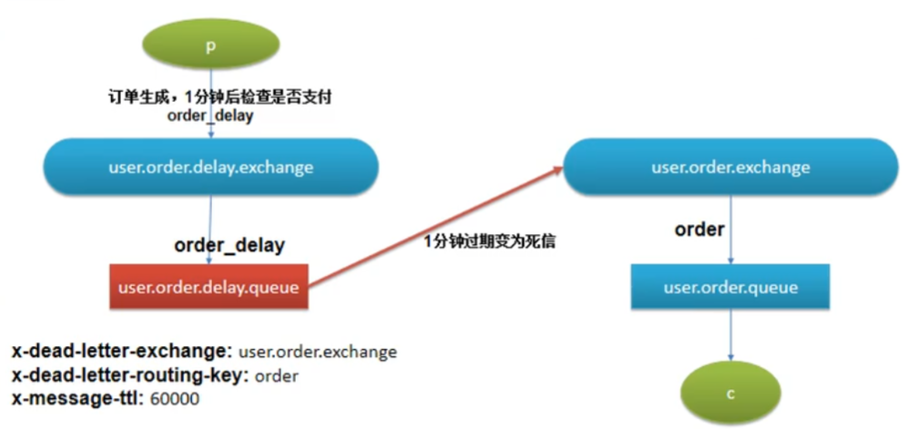
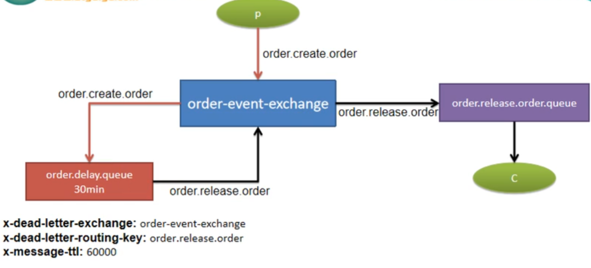
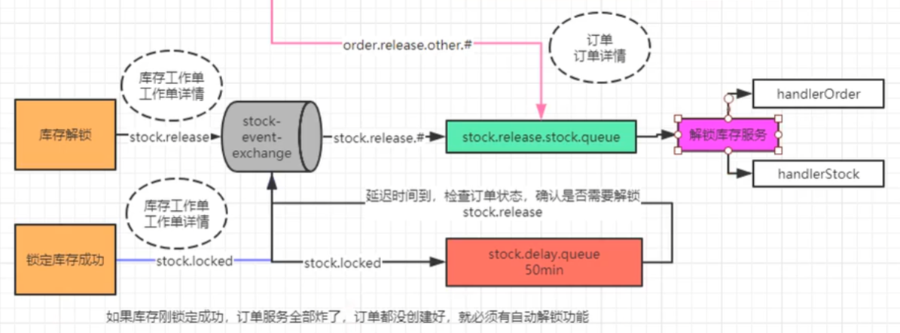

Seata、消息隊列分佈式事務
SpringBoot微服務項目筆記-21
Spring cloud alibaba Seata
- 有很多模式，這邊只演示最簡單的AT模式
- 簡單來說就是多包一層，額外開一個伺服器去監控多個分佈式模組，誰出問題就讓大家都回滾

-
使用
@GlobalTransactional就可以達成分佈式事務 -
利用的機制是在DB增加一個undo_log表，這個表相當於存快照的地方，當要回滾就從這邊還原
- AT模式簡單，代價就是面對併發效率不高
-
這玩意才幾個版本設定就變好多次，具體使用還是看官網吧
延遲隊列
Delay Queue，使用 消息隊列 + 庫存工作單表 來控制分佈式事務
- 下訂單後，要鎖定庫存，這是個分佈式事務，需要保證鎖定的庫存能回滾，首先在DB使用兩張表
wms_ware_order_task庫存工作單表，訂單、工作單id、倉庫idwms_ware_order_task_detail庫存工作單詳情表，訂單、工作單id、倉庫id、skuId、鎖庫存數量- 鎖庫存的時候往工作單表、工作單詳情表插入數據

創建隊列與交換機
在RabbitMQ
- 創建訂單時，遠程調用
orderLockStock創建了庫存工作單，並且鎖定庫存- 那邊發了
"stock-event-exchange", "stock.locked", lockedTo，lockedTo裡面就是庫存工作單id
- 那邊發了
- 當遠程調用創建庫存工作單成功，本地也發一個
"order-event-exchange", "order.create.order"，裡面存的是訂單本體

- 改良，省下一個交換機，帶有
"order.create.order"路由鍵的訂單會進到order.delay.queue這個延遲隊列，而這個隊列還是指向order-event-exchange交換機 - 但是他設有過期時間，當時間到了就把路由鍵換成
order.release.order - 也就是說，所有的訂單最終都會進到
order.release.order.queue，並且被listener消費，這個listener會調用closeOrder方法 closeOrder方法查看訂單是否已經支付，若已支付就完事，訂單可以安心離開隊列。若沒支付就查詢訂單最新狀態，再發到"order-event-exchange", "order.release.other.unlock", order- 這個
"order.release.other.unlock"路由鍵就會把訂單送到stock.release.stock.queue，嘗試進行庫存解鎖的動作

- 之前學了用AmqpAdmin創建交換機與隊列的方法，有更省事的可以直接用
@Bean讓spring自動創建- Broker中沒有該名字的隊列、交換機才會創建
- 不會重複創建覆蓋(一旦創好，不能更新)，如果同名的隊列其中設定(例如過期時間)對不上會報錯
- 第一次使用隊列的時候才會創建
- MyMQConfig.java
@Configuration
public class MyMQConfig {
// 延遲隊列
@Bean
public Queue orderDelayQueue() {
/*
Queue(String name, 隊列名字
boolean durable, 是否持久化
boolean exclusive, 是否排他
boolean autoDelete, 是否自動刪除
Map<String, Object> arguments) 屬性【TTL、死信路由、死信路由鍵】
*/
HashMap<String, Object> arguments = new HashMap<>();
arguments.put("x-dead-letter-exchange", "order-event-exchange");// 死信路由
arguments.put("x-dead-letter-routing-key", "order.release.order");// 死信路由鍵
arguments.put("x-message-ttl", 60000); // 消息過期時間 1分鐘
Queue queue = new Queue("order.delay.queue", true, false, false, arguments);
return queue;
}
// 死信隊列
@Bean
public Queue orderReleaseQueue() {
return new Queue("order.release.order.queue", true, false, false);
}
// 普通路由【死信路由】
@Bean
public Exchange orderEventExchange() {
/*
* String name,
* boolean durable,
* boolean autoDelete,
* Map<String, Object> arguments
* */
return new TopicExchange("order-event-exchange", true, false);
}
// 交換機與延遲隊列的綁定
@Bean
public Binding orderCreateBinding() {
/*
* String destination, 目的地（隊列名或者交換機名字）
* DestinationType destinationType, 目的地類型（Queue、Exhcange）
* String exchange,
* String routingKey,
* Map<String, Object> arguments
* */
return new Binding("order.delay.queue",
Binding.DestinationType.QUEUE,
"order-event-exchange",
"order.create.order",
null);
}
// 死信路由與普通隊列的綁定
@Bean
public Binding orderReleaseBinding() {
return new Binding("order.release.order.queue",
Binding.DestinationType.QUEUE,
"order-event-exchange",
"order.release.order",
null);
}
// 訂單釋放直接和庫存釋放進行綁定
@Bean
public Binding orderReleaseOtherBinding() {
return new Binding("stock.release.stock.queue",
Binding.DestinationType.QUEUE,
"order-event-exchange",
"order.release.other.#",
null);
}
- 庫存區的MQ

/**
* 庫存服務預設的交換機
*/
@Bean
public Exchange stockEventExchange() {
//String name, boolean durable, boolean autoDelete, Map<String, Object> arguments
TopicExchange topicExchange = new TopicExchange("stock-event-exchange", true, false);
return topicExchange;
}
/**
* 普通隊列
*/
@Bean
public Queue stockReleaseStockQueue() {
//String name, boolean durable, boolean exclusive, boolean autoDelete, Map<String, Object> arguments
Queue queue = new Queue("stock.release.stock.queue", true, false, false);
return queue;
}
/**
* 延遲隊列
*/
@Bean
public Queue stockDelay() {
HashMap<String, Object> arguments = new HashMap<>();
arguments.put("x-dead-letter-exchange", "stock-event-exchange");
arguments.put("x-dead-letter-routing-key", "stock.release");
// 消息過期時間 2分鐘
arguments.put("x-message-ttl", 120000);
Queue queue = new Queue("stock.delay.queue", true, false, false, arguments);
return queue;
}
/**
* 交換機與普通隊列綁定
*/
@Bean
public Binding stockLocked() {
//String destination, DestinationType destinationType, String exchange, String routingKey,
// Map<String, Object> arguments
Binding binding = new Binding("stock.release.stock.queue",
Binding.DestinationType.QUEUE,
"stock-event-exchange",
"stock.release.#",
null);
return binding;
}
/**
* 交換機與延遲隊列綁定
*/
@Bean
public Binding stockLockedBinding() {
return new Binding("stock.delay.queue",
Binding.DestinationType.QUEUE,
"stock-event-exchange",
"stock.locked",
null);
}
鎖定庫存
鎖定成功給mq發送一條消息
-
庫存解鎖的幾種情況：
- 下訂單成功，庫存鎖定成功，訂單過期沒有支付被系統自動取消、被用户手動取消
- 下訂單成功，庫存鎖定成功，接下來的業務調用失敗，導致訂單回滾。
-
解析
- 一個訂單對應wms_ware_order_task工作單表一條數據，對應一條工作單task_id
- 一條工作單task_id對應多條詳情sku_id，ware_id
-
service方法流程
- 保存一條工作單到wms_ware_order_task
- 如果庫存鎖定成功，倉庫庫存足夠，就為當前商品插入一條工作單詳情
- 如果有任一商品庫存不足，就回滾
- 如果有庫存，就發送消息到mq的延時隊列，一個商品一條信息StockLockedTo，數量信息必須帶上，因為如果回滾了db就查不到數據了
/**
* 為某個訂單鎖定庫存
*/
@Transactional(rollbackFor = Exception.class)
@Override
public boolean orderLockStock(WareSkuLockVo vo) {
/**
* 保存庫存工作單詳情信息
* 追溯
* 如果沒有庫存，就不會發送消息給mq
* 【不會進入save(WareOrderTaskDetailEntity)邏輯，也不會發送消息給mq，也不會鎖定庫存，也不會監聽到解鎖服務】
*/
WareOrderTaskEntity wareOrderTaskEntity = new WareOrderTaskEntity();
wareOrderTaskEntity.setOrderSn(vo.getOrderSn());
wareOrderTaskEntity.setCreateTime(new Date());
wareOrderTaskService.save(wareOrderTaskEntity);
//1、按照下單的收貨地址，找到一個就近倉庫，鎖定庫存
//2、找到每個商品在哪個倉庫都有庫存
List<OrderItemVo> locks = vo.getLocks();
List<SkuWareHasStock> collect = locks.stream().map((item) -> {
SkuWareHasStock stock = new SkuWareHasStock();
Long skuId = item.getSkuId();
stock.setSkuId(skuId);
stock.setNum(item.getCount());
//查詢這個商品在哪個倉庫有庫存 stock-鎖定num > 0
List<Long> wareIdList = wareSkuDao.listWareIdHasSkuStock(skuId);
stock.setWareId(wareIdList);
return stock;
}).collect(Collectors.toList());
//2、鎖定庫存
for (SkuWareHasStock hasStock : collect) {
boolean skuStocked = false;
Long skuId = hasStock.getSkuId();
List<Long> wareIds = hasStock.getWareId();
if (CollectionUtils.isEmpty(wareIds)) {
//沒有任何倉庫有這個商品的庫存
throw new NoStockException(skuId);
}
//1、如果每一個商品都鎖定成功,將當前商品鎖定了幾件的工作單記錄發給MQ
//2、鎖定失敗。前面保存的工作單信息都回滾了。發送出去的消息，即使要解鎖庫存，由於在數據庫查不到指定的id，就不用解鎖
for (Long wareId : wareIds) {
//鎖定成功就返回1，失敗就返回0
Long count = wareSkuDao.lockSkuStock(skuId, wareId, hasStock.getNum());
// count==1表示鎖定成功
if (count == 1) {
skuStocked = true;
WareOrderTaskDetailEntity taskDetailEntity = WareOrderTaskDetailEntity.builder()
.skuId(skuId)
.skuName("")
.skuNum(hasStock.getNum())
.taskId(wareOrderTaskEntity.getId())
.wareId(wareId)
.lockStatus(1)
.build();
wareOrderTaskDetailService.save(taskDetailEntity);
// 告訴MQ庫存鎖定成功
StockLockedTo lockedTo = new StockLockedTo();
lockedTo.setId(wareOrderTaskEntity.getId());
StockDetailTo detailTo = new StockDetailTo();
BeanUtils.copyProperties(taskDetailEntity, detailTo);// 這裏直接存entity。但是應該存id更好，數據最好來自DB
lockedTo.setDetailTo(detailTo);
rabbitTemplate.convertAndSend("stock-event-exchange", "stock.locked", lockedTo);
// 鎖定成功返回
break;
} else {
//當前倉庫鎖失敗，重試下一個倉庫
}
}
if (skuStocked == false) {
//當前商品所有倉庫都沒有鎖住
throw new NoStockException(skuId);
}
}
//3、肯定全部都是鎖定成功的
return true;
}
解鎖庫存
不使用分佈式事務，每一個sku 產生一條消息
-
庫存鎖定成功，但是訂單service回滾了，此時需要解鎖
-
if(db工作單詳情有數據)：庫存鎖定成功，按照訂單號查詢訂單
-
訂單不存在，那就是訂單service 回滾了【解鎖庫存】
-
訂單存在:
- 訂單狀態：已取消，【解鎖庫存】
- 訂單狀態：未取消，【不解鎖】
-
-
else(db工作單詳情無數據)：已回滾，【不解鎖】工作單與庫存在一個本地事務中
-
解鎖邏輯：
- 庫存加回來，鎖定庫存數量減掉
- 將工作單詳情的狀態修改為已解鎖
- 如果解鎖成功，簽收消息，如果未解鎖成功拒絕消息【手動模式】
- requeue true重新入隊，讓其他節點嘗試解鎖
/**
* 解鎖庫存
*/
@Override
public void unlockStock(StockLockedTo to) {
//庫存工作單的id
StockDetailTo detail = to.getDetailTo();
Long detailId = detail.getId();
/**
* 解鎖
* 1、查詢數據庫關於這個訂單鎖定庫存信息
* 有：證明庫存鎖定成功了
* 解鎖：訂單狀況
* 1、沒有這個訂單，必須解鎖庫存
* 2、有這個訂單，不一定解鎖庫存
* 訂單狀態：已取消：解鎖庫存
* 已支付：不能解鎖庫存
*/
WareOrderTaskDetailEntity taskDetailInfo = wareOrderTaskDetailService.getById(detailId);
if (taskDetailInfo != null) {
//查出wms_ware_order_task工作單的信息
Long id = to.getId();
WareOrderTaskEntity orderTaskInfo = wareOrderTaskService.getById(id);
//獲取訂單號查詢訂單狀態
String orderSn = orderTaskInfo.getOrderSn();
//遠程查詢訂單信息
R orderData = orderFeignService.getOrderStatus(orderSn);
if (orderData.getCode() == 0) {
//訂單數據返回成功
OrderVo orderInfo = orderData.getData("data", new TypeReference<OrderVo>() {
});
//判斷訂單狀態是否已取消或者支付或者訂單不存在
// 1、訂單不存在：解鎖
// 2、訂單存在，且訂單狀態是取消狀態：解鎖
if (orderInfo == null || orderInfo.getStatus() == 4) {
// 工作單狀態必須是 已鎖定 才可以解鎖【因為解鎖方法沒有加事務】
if (taskDetailInfo.getLockStatus() == 1) {
unLockStock(detail.getSkuId(), detail.getWareId(), detail.getSkuNum(), detailId);
}
}
} else {
//消息拒絕以後重新放在隊列裏面，讓別人繼續消費解鎖
//遠程調用服務失敗
throw new RuntimeException("遠程調用服務失敗");
}
} else {
//無需解鎖【回滾狀態】
}
}
/**
* 解鎖庫存的方法【設計DB，沒加事務】
*/
public void unLockStock(Long skuId, Long wareId, Integer num, Long taskDetailId) {
// 1、庫存解鎖
wareSkuDao.unLockStock(skuId, wareId, num);
// 2、更新工作單的狀態 為已解鎖 2
WareOrderTaskDetailEntity taskDetailEntity = new WareOrderTaskDetailEntity();
taskDetailEntity.setId(taskDetailId);
taskDetailEntity.setLockStatus(2);
wareOrderTaskDetailService.updateById(taskDetailEntity);
}
- 抽出StockReleaseListener.java
/**
* 監聽死信隊列，解鎖庫存
**/
@Slf4j
@RabbitListener(queues = "stock.release.stock.queue")
@Service
public class StockReleaseListener {
@Autowired
private WareSkuService wareSkuService;
/**
* 這個是監聽死信消息
* 1、庫存自動解鎖
* 下訂單成功，庫存鎖定成功，接下來的業務調用失敗，導致訂單回滾。之前鎖定的庫存就要自動解鎖
* 2、訂單失敗
* 庫存鎖定失敗
* 只要解鎖庫存的消息失敗，一定要告訴服務解鎖失敗
*/
@RabbitHandler
public void handleStockLockedRelease(StockLockedTo to, Message message, Channel channel) throws IOException {
System.out.println("******收到解鎖庫存的延時信息******，準備解鎖" + to.getDetailTo().getId());
try {
//當前消息是否被第二次及以後（重新）派發過來了
// Boolean redelivered = message.getMessageProperties().getRedelivered();
//解鎖庫存
wareSkuService.unlockStock(to);
// 手動刪除消息
channel.basicAck(message.getMessageProperties().getDeliveryTag(), false);
} catch (Exception e) {
// 解鎖失敗 將消息重新放回隊列，讓別人消費
channel.basicReject(message.getMessageProperties().getDeliveryTag(), true);
}
}
登入攔截放行
-
遠程調用查訂單狀態時，又被之前的攔截器認為是沒登入，導致被跳轉到登入頁，使feign調用失敗
-
可以用
AntPathMatcher匹配uri針對特定網址做放行 -
LoginUserInterceptor.java
/**
* 登入攔截器
* 從session中獲取了登入信息（redis中），封裝到了ThreadLocal中
*/
@Component
public class LoginUserInterceptor implements HandlerInterceptor {
public static ThreadLocal<MemberResponseTo> loginUser = new ThreadLocal<>();
@Override
public boolean preHandle(HttpServletRequest request, HttpServletResponse response, Object handler) throws Exception {
String uri = request.getRequestURI();
AntPathMatcher antPathMatcher = new AntPathMatcher();
boolean match = antPathMatcher.match("/order/order/status/**", uri);
if (match) {
return true;
}
關閉訂單
訂單創建成功，發送一條消息給mq的延時隊列
1、當 訂單數據是 0 待付款，修改DB 訂單狀態為 4 取消狀態
2、關單比解鎖早，所以解鎖的時候檢查訂單狀態為4的就可以解鎖掉了
/**
* 定時關閉訂單
*
*/
@RabbitListener(queues = "order.release.order.queue")
@Service
public class OrderCloseListener {
@Autowired
private OrderService orderService;
@RabbitHandler
public void listener(OrderEntity orderEntity, Channel channel, Message message) throws IOException {
System.out.println("收到過期的訂單信息，準備關閉訂單" + orderEntity.getOrderSn());
try {
orderService.closeOrder(orderEntity);
channel.basicAck(message.getMessageProperties().getDeliveryTag(),false);
} catch (Exception e) {
channel.basicReject(message.getMessageProperties().getDeliveryTag(),true);
}
}
}
/**
* 關閉訂單
* @param orderEntity
*/
@Override
public void closeOrder(OrderEntity orderEntity) {
//關閉訂單之前先查詢一下數據庫，判斷此訂單狀態是否已支付
OrderEntity orderInfo = this.getOne(new QueryWrapper<OrderEntity>().
eq("order_sn",orderEntity.getOrderSn()));
if (orderInfo.getStatus().equals(OrderStatusEnum.CREATE_NEW.getCode())) {
//代付款狀態進行關單
OrderEntity orderUpdate = new OrderEntity();
orderUpdate.setId(orderInfo.getId());
orderUpdate.setStatus(OrderStatusEnum.CANCLED.getCode());
this.updateById(orderUpdate);
// 發送消息給MQ
OrderTo orderTo = new OrderTo();
BeanUtils.copyProperties(orderInfo, orderTo);
try {
//TODO 確保每個消息發送成功，給每個消息做好日誌記錄，(給數據庫保存每一個詳細信息)保存每個消息的詳細信息
rabbitTemplate.convertAndSend("order-event-exchange", "order.release.other", orderTo);
} catch (Exception e) {
//TODO 定期掃描數據庫，重新發送失敗的消息
}
}
}
修復BUG
- 訂單關閉延遲導致庫存未解鎖，並且消息也消費掉了

-
會導致該條庫存永遠無法解鎖了，訂單關閉的消息延遲，訂單狀態還沒修改為4，導致庫存不解鎖
-
解法: 創建一個綁定關係，訂單的交換機綁定庫存釋放的隊列，當訂單關閉成功給 stock.release.stock.queue庫存的釋放隊列也發送一條消息

可靠性
由於把事務轉換成消息隊列的模式，所以必須保證消息本身是可靠的
防止消息丟失
- 做好容錯方法(try-catch，例如失敗後重試)，並且記錄日誌到DB，每個消息是否有傳到Broker都應該被記錄，定期掃描DB未成功的消息針對性重發
- 消息抵達Broker後，要持久化(寫入硬碟)
- 引入訊息確認，publisher confirmCallback(確定有到Broker)與returnCallback(從交換機去到隊列失敗，修改DB中日記狀態)
- 手動Ack，做完作業才將消息消費掉
防止消息重複
例如確實做完作業了，結果ack時當機，導致消息又變回ready
- 消費消息的接口應該是覓等性的，多次調用結果一致，例如工作單的狀態標示可以在內部判斷是否被做過
- 使用防重表(redis或mySQL)，發送的消息業務有唯一標示，做過就不用再做
- rabbitMQ的message本身有一個redelivered屬性，可以標示消息自己是否被二次以上投遞
- 但要注意消息的reject或重試最好有一個間隔，之前我卡在瘋狂重試直接把CPU吃爆
防止消息積壓
消費者端當機或太弱，或是發送者流量太大都會造成積壓
- 消息積壓會導致MQ性能下降，惡性循環
- 彈性擴容，上線更多消費者
- 消息入庫，上線一個臨時消費隊列的服務，批量將消息取出到DB，額外離線處理
小結
- 延遲隊列，把訂單跟鎖庫存這個行為轉換成消息發往MQ
- 後續要做的事，用Listener從MQ隊列中取出。利用交換機與路由鍵匹配的規則，雖然可能有延遲，但確保有任何環節失敗，整體都能事務回滾
- 感覺難度過高，有點聽天書的感覺了，大致能理解但是敲code部分都是囫圇吞棗了
Feign調用報錯400 Bad Reques
紀錄一個DEBUG經驗
feign.FeignException$BadRequest: [400] during ....
- Feign調用出現400一般都是client和controller的參數名不匹配
- 確認下兩個介面的參數名是否一樣，再確認下入參是否為空
- 我就是有一個值之前測試時弄成NULL了，疑惑好久
上次修改於 2022-02-07